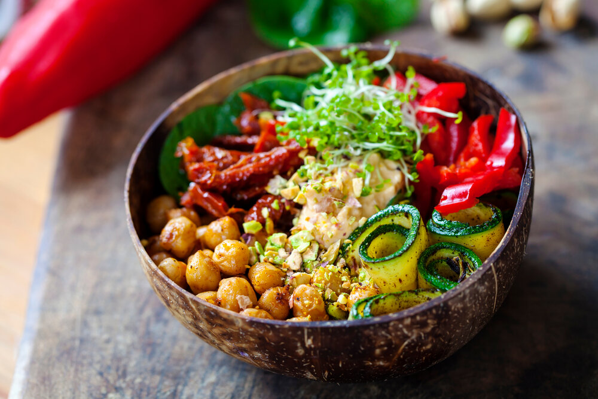

Veganism
Veganism is becoming increasingly popular.
In the past few years, several celebrities have gone vegan, and a wealth of vegan products have appeared in stores.
However, you may still be curious about what this eating pattern involves — and what you can and can’t eat on a vegan diet.
This article tells you everything you need to know about veganism.

What is Veganism
The term “vegan” was coined in 1944 by a small group of vegetarians who broke away from the Leicester Vegetarian Society in England to form the Vegan Society.
They chose not to consume dairy, eggs, or any other products of animal origin, in addition to refraining from meat, as do vegetarians.
The term “vegan” was chosen by combining the first and last letters of “vegetarian.”
Veganism is currently defined as a way of living that attempts to exclude all forms of animal exploitation and cruelty, be it from food, clothing, or any other purpose.
Why do people go vegan?
Vegans generally choose to avoid animal products for one or more of the following reasons.
Ethics
Ethical vegans strongly believe that all creatures have the right to life and freedom.
Therefore, they oppose ending a conscious being’s life simply to consume its flesh, drink its milk, or wear its skin — especially because alternatives are available.
Ethical vegans are also opposed to the psychological and physical stress that animals may endure as a result of modern farming practices.
For instance, ethical vegans deplore the small pens and cages in which many livestock live and often rarely leave between birth and slaughter.
What’s more, many vegans speak out against the farming industry’s practices, such as the grinding of live male chicks by the egg industry or the force-feeding of ducks and geese for the foie gras market.
Ethical vegans may demonstrate their opposition by protesting, raising awareness, and choosing products that don’t involve animal agriculture.
Health
Some people choose veganism for its potential health effects.
For example, plant-based diets may reduce your risk of heart disease, type 2 diabetes, cancer, and premature death.
Lowering your intake of animal products may likewise reduce your risk of Alzheimer’s disease or dying from cancer or heart disease.
Some also choose veganism to avoid the side effects linked to the antibiotics and hormones used in modern animal agriculture.
Finally, studies consistently link vegan diets to a lower body weight and body mass index (BMI). Some people may choose these diets to lose weight.
Environment
People may also choose to avoid animal products because of the environmental impact of animal agriculture.
A 2010 United Nations (UN) report argued that these products generally require more resources and cause higher greenhouse gas emissions than plant-based options (17).
For instance, animal agriculture contributes to 65% of global nitrous oxide emissions, 35–40% of methane emissions, and 9% of carbon dioxide emissions (18).
These chemicals are considered the three principal greenhouse gasses involved in climate change.
Furthermore, animal agriculture tends to be a water-intensive process. For example, 550–5,200 gallons (1,700–19,550 liters) of water are needed to produce 1 pound (0.5 kg) of beef.
That’s up to 43 times more water than is needed to produce the same amount of cereal grains.
Animal agriculture can also lead to deforestation when forested areas are burned for cropland or pasture. This habitat destruction is thought to contribute to the extinction of various animal species.
Types of veganism
- Dietary vegans. Often used interchangeably with “plant-based eaters,” this term refers to those who avoid animal products in their diet but continue to use them in other products, such as clothing and cosmetics.
- Whole-food vegans. These individuals favor a diet rich in whole foods, such as fruits, vegetables, whole grains, legumes, nuts, and seeds.
- Junk-food vegans. Some people rely heavily on processed vegan food, such as vegan meats, fries, frozen dinners, and desserts, including Oreo cookies and non-dairy ice cream.
- Raw-food vegans. This group eats only foods that are raw or cooked at temperatures below 118°F (48°C).
- Low-fat, raw-food vegans. Also known as fruitarians, this subset limits high-fat foods, such as nuts, avocados, and coconuts, instead relying mainly on fruit. Other plants are occasionally eaten in small amounts.
How to go vegan
Foods that vegan avoid
Vegans avoid all foods of animal origin. These include:
- meat
- chicken
- fish
- shellfish
- eggs
- dairy
- honey
Moreover, vegans avoid any animal-derived ingredients, such as albumin, casein, carmine, gelatin, pepsin, shellac, isinglass, and whey.
Foods containing these ingredients include some types of beer and wine, marshmallows, breakfast cereals, gummy candies, and chewing gum.
Foods that vegans eat
Avoiding animal products doesn’t consign you to veggies and tofu alone.
In fact, many common dishes are already vegan or can be adjusted easily.
Some examples include bean burritos, veggie burgers, tomato pizzas, smoothies, nachos with salsa and guacamole, hummus wraps, sandwiches, and pasta dishes.
Meat-based entrées are generally swapped for meals containing the following:
- beans
- lentils
- tofu
- seitan
- tempeh
- nuts
- seeds
You can replace dairy products with plant milks, scrambled eggs with scrambled tofu, honey with plant-based sweeteners like molasses or maple syrup, and raw eggs with flax or chia seeds.
In addition, vegans tend to consume a variety of whole grains, as well as a wide array of fruits and vegetables.
Finally, you can also choose from an ever-growing selection of ready-made vegan products, including vegan meats, fortified plant milks, vegan cheeses, and desserts.
However, these highly processed products may be loaded with additives, oils, and artificial ingredients.